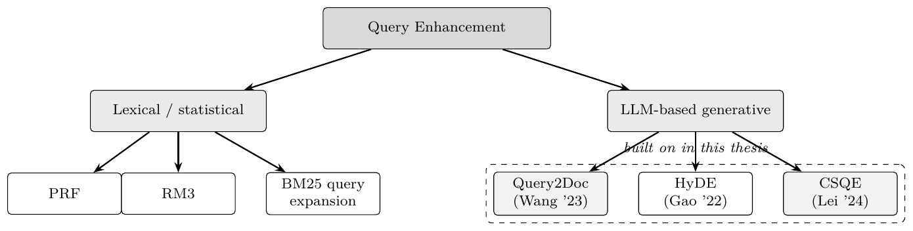
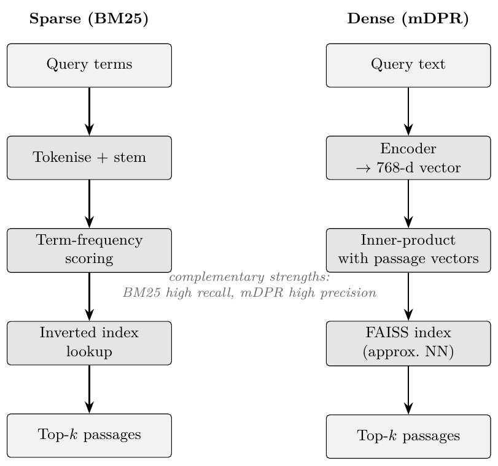
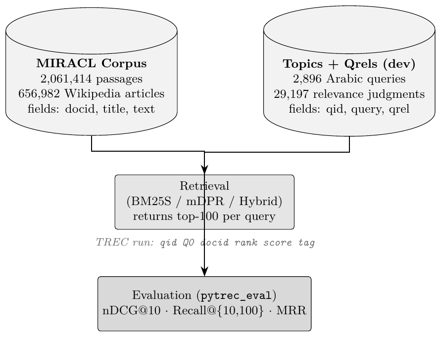
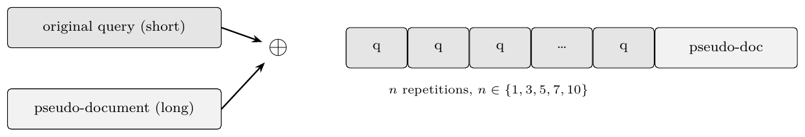

Thesis Figures — Review & Sign-Off
15 figures · ~32 variations · 7 tables · 12 system diagrams · all rendered post-WS1.
Open in Chrome locally. Scroll through; ★★★ marks the variation I recommend for each figure.
Open in Chrome locally. Scroll through; ★★★ marks the variation I recommend for each figure.
Chapter 2 — Literature Review & Background
Fig 2.1RAG system architecture§2.1 (intro to RAG)
Conceptual diagram of a Retrieval-Augmented Generation pipeline: query → retriever → LLM → answer, with the corpus feeding the retriever. Establishes the framework the thesis works within.
TikZuse as-is

Clean four-box flow. Embedding-quality vector PDF.
Fig 2.2Query Enhancement taxonomy§2.4 (QE techniques)
Tree splits QE into lexical (PRF, RM3, BM25 expansion) vs LLM-based generative (Query2Doc, HyDE, CSQE). Dashed box around Query2Doc + CSQE marks the techniques this thesis builds on.
TikZuse as-is

Positions the contribution within the literature.
Fig 2.3Dense vs Sparse retrieval, side-by-side§2.3 (retrieval families)
Two-column comparison showing how each family handles the same query. Closes with a note on complementary strengths — motivates the hybrid retrieval direction in Ch 4.
TikZuse as-is

Sets up the hybrid argument early.
Table 2.1 — Reviewed QE papers. §2.4 · hand-compile TODO · Source: papers/
Table 2.2 — LLM models used. §2.5 · hand-compile TODO · Source: research_decisions/llm_model_research.md
Chapter 3 — Methodology
Fig 3.1End-to-end thesis pipeline§3.1 (overview)
Query → QE layer → BM25 + mDPR (parallel) → fusion (CC/RRF) → Top-k → evaluation against MIRACL qrels. The reader's map for what follows in Ch 3.
TikZuse as-is

Fig 3.2MIRACL dataset structure§3.2 (dataset)
Corpus (2.06M passages) + topics/qrels (2,896 dev queries) feeding retrieval → TREC run → pytrec_eval. Documents both the inputs and the eval contract.
TikZuse as-is

Fig 3.3BM25S indexing flow§3.4 (sparse retrieval)
Corpus → Arabic tokenizer + PyStemmer → stopword removal → BM25S index (k₁=0.9, b=0.4). 5 GB inverted index.
TikZuse as-is

Fig 3.4mDPR encoding flow§3.5 (dense retrieval)
Query batch → mDPR encoder on GPU (FP16) → 768-d vectors → FAISS index inner-product search → ranked passages.
TikZuse as-is

Fig 3.5Query2Doc generation§3.6 (Query2Doc)
Query → prompt template → LLM (zero-shot, ≈128 tokens) → pseudo-document → concatenate with original query → retrieve. Mirrors how §3.5 of the Wang 2023 paper formalises Q2D.
TikZuse as-is

Fig 3.6BM25 query repetition mechanism§3.6 (BM25 repetition)
Original query repeated n times, then ⊕ pseudo-doc → BM25 retrieval. Visualises the term-dilution remedy from the original Q2D paper.
TikZuse as-is

Fig 3.7Hybrid fusion: CC and RRF§3.7 (hybrid)
Side-by-side fusion methods. CC: α-weighted sum of normalised scores. RRF: reciprocal-rank sum. Both produce one final ranking from two retriever outputs.
TikZuse as-is

Equations alongside boxes — the only place the thesis shows both fusion definitions visually.
Fig 3.8CSQE pipeline (three-stage)§3.8 (CSQE)
Stage 1: BM25 first-pass retrieves top-5. Stage 2: extract corpus context → Aya LLM → corpus-grounded pseudo-doc. Stage 3: q^α ⊕ pdoc → BM25 second-pass → final top-100.
TikZuse as-is

The methodology figure with the most informational density. Worth a careful read by the examiner.
Fig 3.9Best system: BM25-only-expanded (Config A) RRF k=20§3.8.3 / §4.7
Architectural view of the headline system. CSQE-expanded query feeds BM25; original query feeds mDPR; RRF fuses both. NDCG@10 = 0.714.
TikZuse as-is

Pair with Fig 4.11 in §4.7 — methodology + result together.
Table 3.1 — Per-model hardware config. §3.6 · hand-compile TODO
Table 3.2 — Per-model generation hyperparams. §3.6 · hand-compile TODO
Chapter 4.1 — Baselines (mDPR vs BM25)
Table 4.1 — mDPR vs BM25 baselines. §4.1 · ready · Source: output/pdf/table_4_1.tex · Values rounded to 3 dp per Decision D4 (mDPR 0.499, BM25 0.462).
Fig 4.1Per-query NDCG@10 distribution, mDPR vs BM25§4.1 (intro to per-query)
Shows the two baselines' per-query distributions overlaid. Both are bimodal — many queries land near 0, many land near 1, few in between. Motivates the error-analysis split in §4.2.
Recommended: v1 histogram. Easier to spot the bimodality and the failure mass at zero.
v1 — histogram★★★ primary

Best for the bimodal-shape claim; bars cluster at extremes.
v2 — CDF★★ alt

Better if you want to cite the 34% failure number off the chart directly.
Chapter 4.2 — Error Analysis (baseline)
Fig 4.2Failure cliff — 34% of queries score NDCG@10 < 0.3§4.2.1
The headline error-analysis figure. Now uses canonical per-query data (WS1 §2 reconciliation): 33.9% failure rate, not the 39% the buggy file reported. v1 annotates the cliff on the CDF; v2 shows the same data as bucket bars.
Recommended: v1. The annotation makes the 34% number readable at a glance.
v1 — annotated CDF★★★ primary

Single-glance story. 34% / 0.3 marker pair is the takeaway.
v2 — bucket histogram★ low

More detail but less story; consider only if v1 doesn't suit Dr. Tahani's preferences.
Fig 4.3NDCG@10 by query length (Scheme A: 1–3 / 4–8 / 9+ words)§4.2.2
After WS1: the linear length↔NDCG trend is gone (r≈0); Medium (4–8) outperforms Long (9+). Short queries (1–3) still clearly underperform — preserves the QE motivation. Values: 0.345 / 0.511 / 0.476.
Recommended: v1 boxplot. Clean, examiner-friendly. v3 scatter shows the per-length variance but is busier.
v1 — boxplot★★★ primary

Standard IR-paper choice; medians and IQRs visible.
v2 — violin★★ alt

Shows density shape; slightly more "research-y".
v3 — scatter with per-length mean line★ low

Most granular but noisy at long lengths.
Fig 4.4Recall@k curve, k=1…100§4.2.3 (coverage)
mDPR vs BM25 mean recall as k grows. After WS1 §2 correction, the curve reveals the ~10% recall ceiling even at depth 100 — a stronger motivation for hybrid + CSQE than the original "ranking-only" framing.
Recommended: use as-is. One variation only.
recall curve (log-x)★★★ primary

Log-x makes the early-rank gap legible.
Chapter 4.3 — Model Comparison (Dense)
Table 4.2 — 10 models, Dense Query2Doc. §4.3 · partial · 4 models have full metrics; Osman's 5 have NDCG only (need R@10, R@100, MRR fill-in).
Fig 4.5Sorted NDCG@10 across 10 LLMs§4.3 (model leaderboard)
All 10 Q2D models on a single bar chart. Aya 8B is top (0.616) on Dense; mDPR baseline (0.499) shown as a dashed reference line. v3 grouped variant adds R@10 and MRR — only useful if §4.3 needs to discuss those metrics in one chart.
Recommended: v1 (vertical). Use v2 if model names overflow at thesis text width; skip v3 unless multi-metric discussion is needed.
v1 — vertical sorted bar★★★ primary

Standard leaderboard layout, baseline line included.
v2 — horizontal sorted bar★★ alt

Easier to read long model names. Same data.
v3 — grouped (NDCG / R@10 / MRR)★ low

Blocked by missing R@10/MRR for Osman's 5 models. Use only after table 4.2 is filled.
Fig 4.6Model size (B params) vs Δ NDCG@10 over baseline§4.3 (size effect)
Tests whether bigger LLMs produce better pseudo-docs. v1 is plain scatter; v2 adds labels + linear fit. Note: WS1 task 5.C.2 also asks for a Qwen-family Pearson coefficient — that's a separate text statistic, not a figure.
Recommended: v2 (labelled). Without labels the scatter doesn't tell the story; the trendline visualises the size effect.
v1 — plain scatter★ low

Loses the reader without labels.
v2 — labelled + trendline★★★ primary

Slope visible, individual models identified.
Chapter 4.4 — Model Comparison (BM25 + Repetition)
Table 4.3 — 9 models BM25 best configs. §4.4 / §4.6 · ready
Fig 4.7BM25 query-repetition sweep across 9 models§4.6 (BM25 repetition)
For each model, NDCG@10 vs n (1, 3, 5, 7, 10) with optional β markers. The thesis claim (5.C.6 corrected): 6 of 9 models were below baseline at n=1; all 9 recover at some n. v3 heatmap shows every cell at a glance.
Recommended: v1 line plot. v3 heatmap is good for appendix or as a reviewer-only sanity check.
v1 — multi-line★★★ primary

Each model's recovery trajectory is visible; baseline reference line included.
v2 — line + β markers★ low

Includes β=2/4/6 but x-axis becomes awkward.
v3 — heatmap (model × config)★★ alt

Browse-all-values view; consider for appendix.
Fig 4.8Dense gain vs BM25 gain per model§4.4 / §4.6 (asymmetry)
Scatter plot answering "which models help BOTH retrievers?" Aya and Jais-2 sit in the top-right (improve both); most others only help Dense. Motivates the asymmetric application argument used in §4.9.
Recommended: v1 labelled scatter. v2 slope is the same data but less compact.
v1 — scatter (Dense Δ vs BM25 n=1 Δ)★★★ primary

Quadrant story: only Aya/Jais-2 sit in the both-positive quadrant.
v2 — slope chart★ low

Same information, less compact.
Chapter 4.5 — Hybrid (no QE)
Table 4.4 — BM25 / mDPR / Hybrid CC / Hybrid RRF. §4.7 · ready
Fig 4.9Hybrid CC α sweep (no QE)§4.7 (hybrid)
Convex-combination weight α from 0.1 → 0.9. NDCG@10 peaks symmetrically around α=0.5 (0.627). Justifies α=0.5 as the no-QE hybrid baseline.
Recommended: v1 single-metric. v2 (all 4 metrics) is informative but harder to read.
v1 — NDCG only★★★ primary

Clear unimodal curve, best-α annotation.
v2 — all 4 metrics★★ alt

Use if §4.7 also discusses Recall@10/Recall@100/MRR shapes.
Chapter 4.6 — CSQE (corpus-steered)
Table 4.5 — CSQE ablation (corpus-only / blind-only / 2+2). §4.8 · ready
Table 4.6 — CSQE vs blind QE on BM25 + Dense. §4.8 · hand-compile TODO
Fig 4.10CSQE α (query repetition) sweep — 4 points§4.8 (CSQE robustness)
α=1→4 moves NDCG@10 by less than 0.002 across both BM25-only and the best system. The curve is essentially flat.
Recommended: CUT from the thesis. Replace with one sentence: "Varying α from 1 to 4 changed NDCG@10 by less than 0.002; α=4 was used throughout." The figure shown here is provided for completeness.
v1 — flat α curve★ cut from thesis

Visually under-informative. Keep file as a registry artefact, drop from the chapter.
Chapter 4.7 — Best System (CSQE + Hybrid)
Table 4.7 — Configs (BM25-only-expanded / Dense-only-expanded / Both-expanded) × CC + RRF. §4.9 · ready · Labels renamed per Decision D3.
Fig 4.11System progression — BM25 → … → Best system (0.714) HEADLINE§4.9 (main result)
The thesis headline figure. Six bars: BM25 (0.462) → mDPR (0.499) → best blind Dense Q2D Aya (0.616) → Hybrid RRF no-QE (0.627) → BM25+CSQE (0.616) → Best system BM25-only-expanded RRF k=20 (0.714). v2 annotates Δ over best-so-far; v3 is a grouped bar across NDCG@10, R@10, R@100, MRR.
Recommended: v2 (with Δ annotations). The +0.087 over the no-QE hybrid baseline is the key claim — annotations make it self-evident. v1 as backup if §4.9 wants minimalism; v3 only if Dr. Tahani requests multi-metric in one figure.
v1 — plain bars★★ alt

Clean fallback. Loses the +0.087 callout.
v2 — with Δ annotations★★★ primary

Best storytelling: every bar gains over best-so-far; final +0.087 is the headline.
v3 — grouped multi-metric★ low

Information-dense but harder to read at thesis text width.
Chapter 4.8 — Error Analysis (CSQE)
Fig 4.12Per-query Δ NDCG@10 — CSQE+Hybrid vs Aya-blind§4.10 (per-query)
Distribution of pairwise improvements. Mass shifts right of zero (56.8% improve, mean +0.189). Shaded bands mark Big Win (Δ > 0.3) and Regression (Δ < −0.1). Powered by the validated
csqe_vs_blind_per_query.csv (the figure that was blocked before WS1).Recommended: v1 histogram. The shaded bands + annotated counts tell the full story; KDE is smoother but readers lose the count axis.
v1 — histogram with bands★★★ primary

Counts + band annotations + zero-line: the strongest single image in §4.10.
v2 — KDE with mean★ low

Smooth, but the "1,646 improvements" message is harder to convey from density alone.
Fig 4.13NDCG@10 by 1st-pass relevance (BM25 top-1, qrel ≥ 1)§4.10 (first-pass dependence)
Splits the 2,896 queries by whether BM25's top-1 hit is a relevant doc. When yes (n=1,061): CSQE+Hybrid reaches 0.888. When no (n=1,835): 0.581. The strongest predictor of CSQE behaviour. Note: WS1 confirmed top-1 (not top-5) as the right definition.
Recommended: v2. The sample-size annotations (1,061 vs 1,835) are essential context the v1 caption alone can't carry.
v1 — plain grouped bar★★ alt

Clean but missing sample sizes.
v2 — with sample-size annotations★★★ primary

n labels make the asymmetry (1,061 vs 1,835) immediately visible.
Fig 4.14Δ NDCG@10 by query length (Scheme A: 1–3 / 4–8 / 9+ words)§4.10 (length analysis)
CSQE+Hybrid lifts every length bucket. Short queries gain the most proportionally (+43.6%), Medium absolute (+0.197), Long least (+0.132). Matches Mohammed's Scheme-A CSV from WS1.
Recommended: v2 grouped bars. v1 only shows Δ; v2 shows both blind and CSQE values, anchoring the gain visually.
v1 — Δ-only bars★★ alt

Compact, shows the headline +43.6% relative gain.
v2 — grouped blind vs CSQE★★★ primary

Side-by-side blind vs CSQE values + sample sizes; reader sees both the starting point and the lift.
Fig 4.15Regression types breakdown (n=367)§4.10 (regression analysis)
Of the 367 queries CSQE regressed by Δ < −0.1: Type A (strong BM25 hurt by expansion) 52%, Type B (poisoned first-pass) 36%, Type C (other) 12%. Categorisation defined in §3.9.
Recommended: v2 donut. Pie/donut is the conventional choice for a 3-way categorical breakdown.
v1 — stacked horizontal bar★★ alt

Compact, works well inline in narrow figure environments.
v2 — donut★★★ primary

Examiner-conventional choice for type breakdowns.
Sign-off & Wrap-up
Procedure for closing this out:
- Scroll through the variations above. For any figure where you'd override my ★★★ pick, note it (mention to me in the chat or just edit
thesis_figures/README.mddirectly). - The four hand-compile TODO tables (2.1, 2.2, 3.1, 3.2, 4.6) need data entry from existing sources — none requires re-running experiments.
- Once happy, we commit the changes: many new figures + 5 new TikZ + 5 notebook updates + this REVIEW.html + PROGRESS_SNAPSHOT.html.
Mohammed
Override list (which ★★★ to swap, if any):
_______________________________________
_______________________________________
Date / OK to commit:
_______________________________________
Osman
Override list (which ★★★ to swap, if any):
_______________________________________
_______________________________________
Date / OK to commit:
_______________________________________
All figures rendered with canonical post-WS1 data: failure rate 33.9%, mDPR mean nDCG 0.4993, Scheme-A buckets 0.345 / 0.511 / 0.476, Config A renamed to BM25-only-expanded. Tables rounded to 3 dp.